多模态攻击与防御速览
视觉-语言预训练模型(VLP安全)
预备知识
多模态一系列模型
李沐老师的《多模态论文串讲》或博客上的《多模态速览》
BERT-attack
(EMNLP 2020)
利用以 BERT为代表的预训练掩码语言模型生成对抗样本。
1.计算重要性分数
把这个词从句子中去掉（用一个无意义的词如 [MASK] 替换），然后看模型的预测结果与正确标签 Y 的置信度下降了多少。下降得越多，说明这个词越重要。
2.筛选关键词
在计算完所有词的重要性分数后，算法会根据分数从高到低进行排序。
3.为重要词寻找最佳替换
如果 w_j 是一个完整的词（没有被切分成子词），就直接筛选候选词。
如果 w_j 被切分成了多个子词，算法会使用 PPL (Perplexity，困惑度) 来进行排序和筛选。
分词后的序列$X=(x_0,x_1,…,x_t)$的ppl计算公式为：
$$
PPL(x)=exp(-\frac{1}{t}\sum _ {i}^tlogp_\theta(x_i\mid x _ {<i}))
$$
2
3c_loss = nn.CrossEntropyLoss(reduction='none')
ppl = c_loss(word_predictions.view(N*L, -1), all_substitutes.view(-1)) # [ N*L ]
ppl = torch.exp(torch.mean(ppl.view(N, L), dim=-1)) # N
4.攻击
遍历候选替换词集合 C 中的每一个词 c_k。
用候选词 c_k 替换掉原句中的重要词 w_j，生成一个新句子 S'。
将新句子 S' 输入模型进行预测。如果模型的预测结果 不再是 正确标签 Y，则攻击成功。
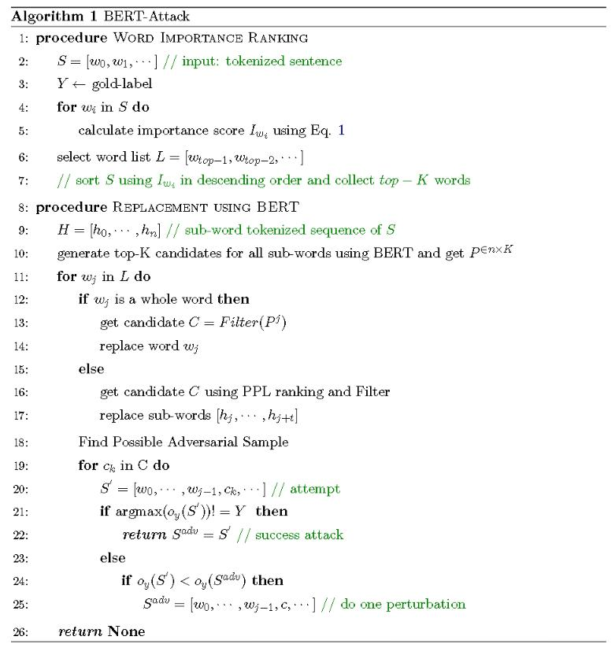
Projected Gradient Descent(PGD)
(ICLR 2018)
梯度攻击常用方法。
在此之前有快速梯度符号方法（FGSM）等方法，具体而言，取梯度的符号方向，并乘以一个小的超参数。
$$
x+\epsilon sgn(\nabla_xL(\theta,x,y))
$$
PGD可以被看作是FGSM的迭代版本。
初始化: 在原始样本x的$\epsilon$-邻域内随机选择一个初始点$x _ {adv(0)}$。这个随机初始化有助于避免陷入局部最优。
$$
x _ {adv(0)}=x+\text{random_perturbation}
$$
迭代更新: 在进行T次迭代的每一步t中：
-
计算损失函数关于当前对抗样本$x _ {adv}^{(t)}$的梯度： $$ g^{(t)} = \nabla _ {x _ {adv}^{(t)}} J(\theta, x _ {adv}^{(t)}, y _ {true}) $$
-
沿着梯度符号方向更新对抗样本，步长为$\alpha$： $$ x _ {adv}^{(t+1)} = x _ {adv}^{(t)} + \alpha \cdot \text{sign}(g^{(t)}) $$
-
将更新后的样本投影回原始样本x的$\epsilon$-邻域内。
L∞范数的话，投影操作为： $$ x _ {adv}^{(t+1)} = x+\text{clip}(x _ {adv}^{(t+1)}-x, - \epsilon, + \epsilon) $$
L2范数的话，投影操作为： $$ x _ {adv}^{(t+1)} = x+(x _ {adv}^{(t+1)}-x)\cdot\text{min}(1,\frac{\epsilon}{||x _ {adv}^{(t+1)}-x||_2})$$
其实就是把它clip到扰动范围内。
直接来看代码：
1 | |
对抗攻击
白盒攻击
不可见
(ACMMM 2022)Towards adversarial attack on vision language pre-training models
Co-attack
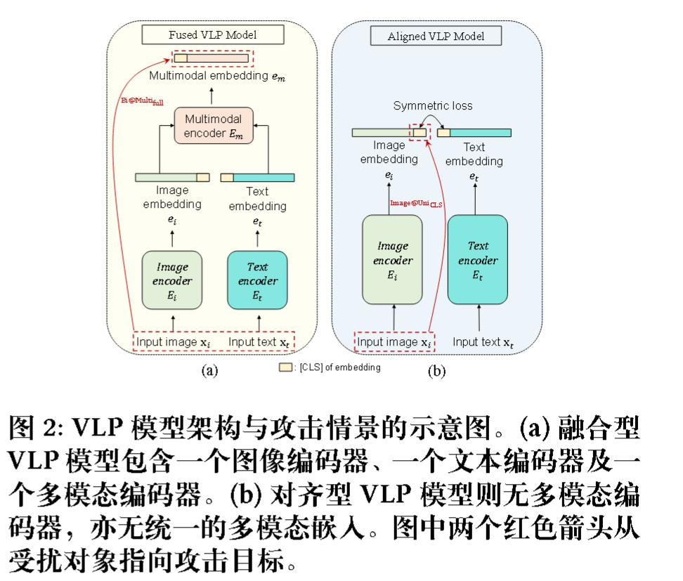
攻击多模态嵌入（Attacking Multimodal Embedding）
Co-Attack 的目标是促使被扰动的多模态嵌入偏离原始多模态嵌入。其损失函数定义为:
$$ \text{max } \mathcal{L}(E_m(E_i(x_i’), E_t(x_t’)), E_m(E_i(x_i), E_t(x_t))) + \alpha_1 \mathcal{L}(E_m(E_i(x_i’), E_t(x_t’)), E_m(E_i(x_i), E_t(x_t))) $$
这里：
- $E_m(\cdot, \cdot)$ 代表多模态编码器。
- $E_i(\cdot)$ 代表图像编码器。
- $E_t(\cdot)$ 代表文本编码器。
- $x_i$ 是原始输入图像。
- $x_t$ 是原始输入文本。
- $x_i’$ 是扰动后的图像。
- $x_t’$ 是扰动后的文本。
- $\mathcal{L}$ 是一个损失函数，通常用于衡量嵌入之间的差异（例如，KL散度损失）。
- $\alpha_1$ 是一个超参数，控制第二项的贡献，第二项对应 $\delta _ {i\&t}$，表示图像和文本扰动产生的合扰动。
该优化问题通常通过类似 PGD 的程序解决。
攻击单模态嵌入（Attacking Unimodal Embedding）
Co-Attack 旨在促使被扰动的图像模态嵌入偏离被扰动的文本模态嵌入。其损失函数定义为:
$$ \text{max } \mathcal{L}(E_i(x_i’), E_i(x_i)) + \alpha_2 \cdot \mathcal{L}(E_i(x_i’), E_t(x_t’)) $$
在这两种情况下，攻击流程都是先扰动离散的文本输入，然后根据文本扰动的结果扰动连续的图像输入 。对于图像扰动，通常使用基于梯度的 PGD 攻击。对于文本扰动，则使用 BERT-Attack 方法。
CoAttack能拉大距离和夹角。
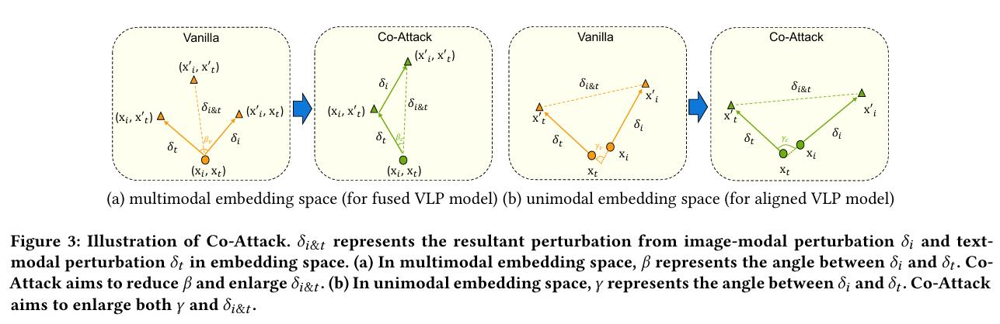
论文中其实没有从理论上解释为什么能做到。只通过做实验表明，可以发现平均角度都提高了。
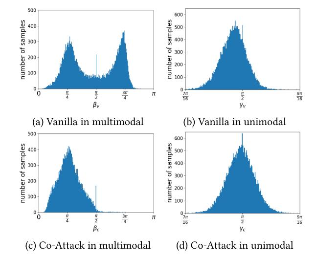
(ACM MM 2023 )Advclip: Downstream-agnostic adversarial examples in multimodal contrastive learning
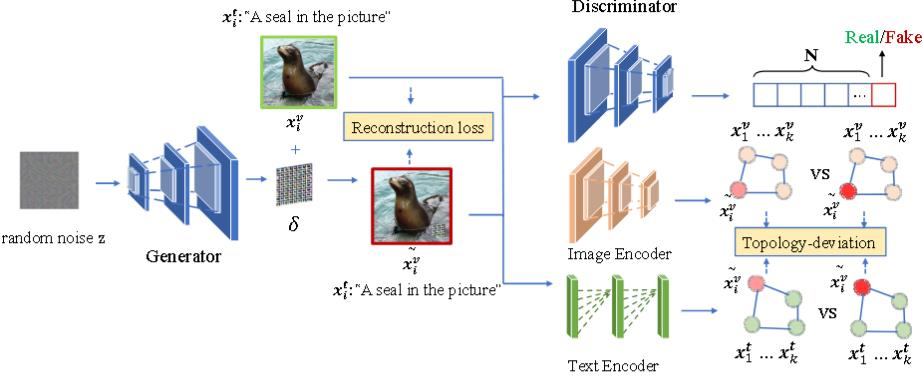
AdvCLIP使用了GAN来生成一个通用对抗补丁将其加到数据集的图像上，从而得到一个对抗样本。
$$
\tilde{x_i^v}=x\odot(1-m)+G(z)\odot m
$$
我们直接从损失函数来看是如何构建模型和训练模型的。
除了GAN的G损失和D损失，还有：
重建损失：$||\tilde{x_i^v}-x||_2$
对比损失：即，使用InfoNCE来衡量编码器输出的向量之间的相似度。
具体而言，拉大将良性图像和对抗图像的特征距离。由于InfoNCE不是对称的，所以要正反共计算两次损失函数。
拓扑偏差损失：
也就是对应图中的Topology-deviation。旨在破坏对抗样本与其对应正常样本之间的拓扑相似性，即在表示空间中基于样本间相似度构建的邻域关系图。
论文里是这么说的。构件图后，再通过交叉熵计算正常图和对抗图的损失函数。
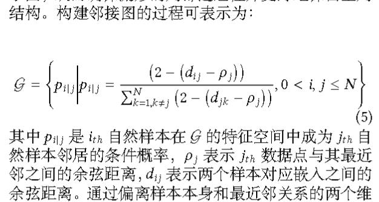
似乎和代码有些不同，我们直接来看代码。
首先要进行进行归一化。
接着计算点积，$S=OO^T$。再将其转为距离，$D=1-S$。并给每个点到自身的距离（即对角线元素）临时设置为一个很大的数（这里是3）。
定义$\rho_i$为最近的正距离$\rho=\text{min}D$。再把它转为新的相似度矩阵，$S=1-(D-\rho)$。
S的范围是-1到1，$\frac{S+1}{2}$把S转为[0,1]上。最好再把它进行行归一化，这就是定义的概率（因为概率要满足sum为1。）
然后就是计算交叉熵了。
1 | |
可见
(arxiv 2021)Reading isn’t believing: Adversarial attacks on multi-modal neurons
作者发现在CLIP模型中，文本标签可以覆盖纹理和图像形状。当CLIP模型读取标签、看到纹理 并分类形状时，这种对抗性攻击风格会获得额外的选项。
比如我们明目张胆给图像加入一个文本标签，结果CLIP直接把标签当做正确的。
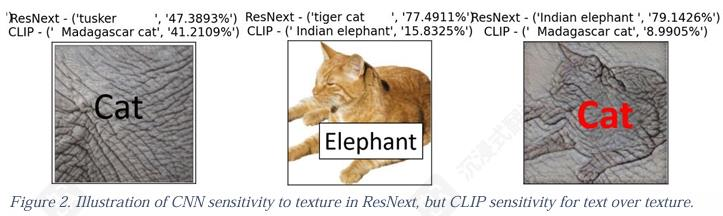
哪怕打错字，也有效。
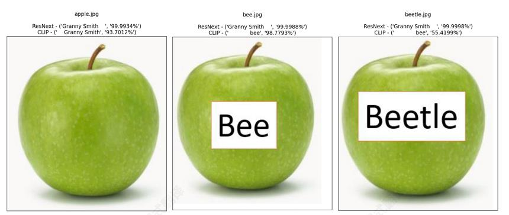
字体越大越有效。
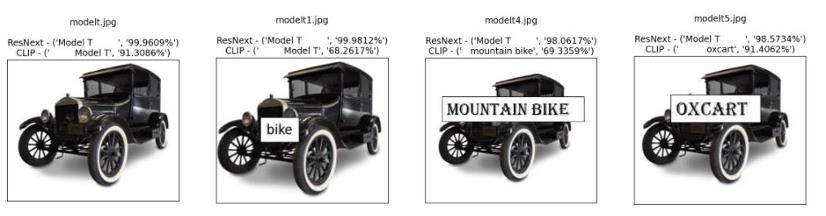
黑盒攻击
样本级扰动
(ICCV 2023)Set-level guidance attack: Boosting adversarial transferability of vision-language pre-training models
首次对视觉语言预训练（VLP）模型中对抗样本的可迁移性进行了研究。
可迁移性
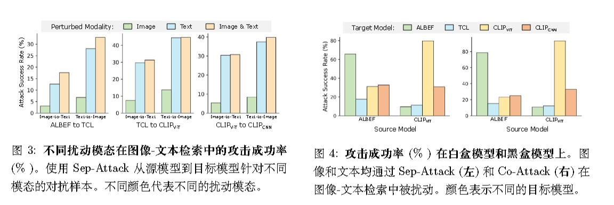
作者认为，对抗样本的迁移性退化主要是由于现有攻击方法的局限性：
- Sep-Attack 的一个主要局限性是它没有考虑不同模态之间的交互作用。作为一种针对每个模态的独立攻击方法，它无法建模在多模态学习中成功攻击至关重要的模态间对应关系。这在图像-文本检索等多模态任务中尤为明显，其中真实值不是离散标签（例如，图像分类），而是与输入模态相对应的另一种模态数据。Sep-Attack 中完全缺乏跨模态交互，严重限制了对抗样本的泛化能力，并降低了它们在不同 VLP 模型之间的迁移性。
- 虽然 Co-Attack 旨在利用模态之间的协作生成对抗样本，但它仍存在一个关键缺点，阻碍了其在其他 VLP 模型中的迁移性。与单模态学习不同，多模态学习涉及多个互补模态，并具有许多对许多的跨模态对齐，这给实现足够的对抗迁移性带来了独特的挑战。然而，Co-Attack 仅使用单个图像-文本对来生成对抗数据，限制了其他模态中多个标签提供的指导多样性。跨模态指导的这种缺乏多样性，使得对抗样本与白盒模型的对齐模式高度相关。因此，对抗样本的通用性受到限制，它们在迁移到其他模型时的效果也会下降。
算法
一些符号计法：
$B[,\epsilon]$表示合法搜索空间，$\epsilon$分别表示图像最大扰动范围或者文本中科改变单词的最大数量。
正如名字所说，“集合”，算法不是简单地针对单个图像和单个标题进行优化，而是构建了一个对抗性标题集合和一个图像集合，并利用这些集合来“引导”对抗性样本的生成，从而使攻击效果更稳定和强大。
第一步，使用余弦相似度来构建对抗性标题集合 t'。
第二步，通过加入高斯噪声来构建图像集合 v。
第三步，集合地生成对抗性图像和对抗性文本。
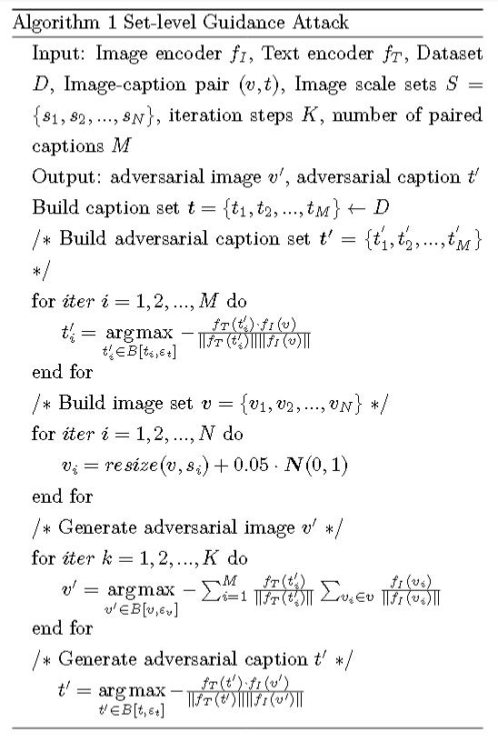
(arxiv 2023)Sa-attack: Improving adversarial transferability of vision-language pre-training models via self-augmentation
中山大学网安院长为通讯。未录用未公开代码。
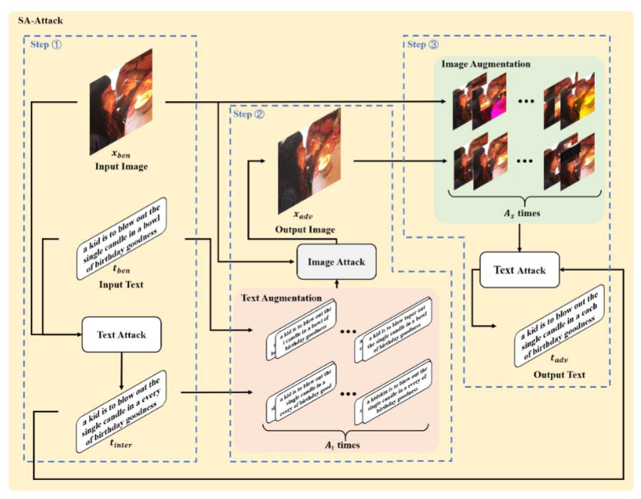
方法包含三个步骤：
- 从良性图像和良性文本中生成对抗性中间文本。
- 使用增强的良性文本和对抗性中间文本，结合良性图像，生成对抗性图像。¸
- 使用增强的良性图像和对抗性图像，结合对抗性中间文本，生成对抗性文本。不同颜色代表不同模块。图中各变量的描述见表
其他部分和上一篇类似。
主要区别有几个，噪声改为均值为0，方差为0.05的均匀分布，并会对图像的clip到[0,1]。
(TMM 2023)Exploring transferability of multimodal adversarial samples for vision language pre-training models with contrastive learning
两大贡献
(1) 通过将扰动优化与多模态对抗样本生成统一于一个基于梯度的框架中，能够更有效地攻击那些语义相似的多模态信息中的脆弱点。
(2) 运用对比学习，从多角度扰动良性样本的内在结构及图文对的上下文一致性，从而提升了生成的多模态对抗样本的可迁移性。
算法
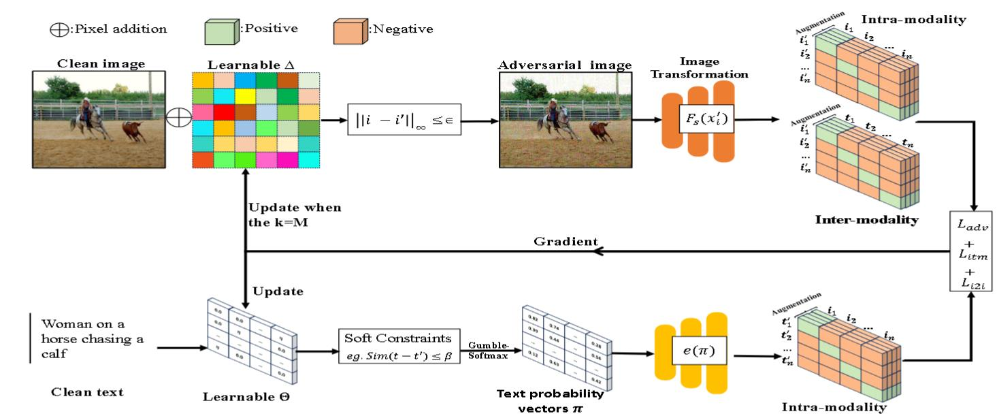
使用$L_\infty$来约束对抗扰动。通过最大化给定前序 token 的似然来约束t′的流畅性。使用BERT 得分来约束对抗文本t'。
图像-文本语义相似度损失$L _ {adv}$:
$$
L _ {adv} = \begin{cases}
\min J(F_s(i’), F_s(t’)) \\
\text{s.t. } |i’ - i| _ {\infty} \leq \epsilon \\
\text{s.t. } \text{similarity}(t’, t) \leq \beta
\end{cases}
$$
软约束损失$L _ {prep}$：
由于文本的离散性，所以需要将文本转为连续分布。
采用Gumbel-Softmax来建模文本数据。
具体而言，对于一个词序列$t=[\omega_1,\omega_2,…,\omega_n]$，其中每个$\omega_j$属于固定词表V，使用由矩阵$\Theta\in R ^ {n\times V}$参数化的Gumbel-Softmax分布$P _ {\theta}$。用于采样$\pi$。
$$
\begin{align}
(\pi_k)_j &= \frac{\exp((\Theta _ {k,j} + g _ {k,j})/\tau)}{\sum _ {\nu=1} ^ {V} \exp((\Theta _ {k,\nu} + g _ {k,\nu})/\tau)}
\\e(\pi) &= e(\pi_1) \cdots e(\pi_n)
\end{align}
$$
其中$g _ {k,j}\sim Gumbel(0,1)$。
上面第一条式子其实就是Gumbel Softmax，具体而言，$softmax((logp_i-log(-log\epsilon_i))/\tau),\epsilon\sim U[0,1]$。
Gumbel 分布的分布函数为$F(x;\mu,\beta)=e ^ {-e ^ {-(x-\mu)/\beta}}$。若想从中采样，则$x=F ^ {-1}(u)=\mu-\beta ln(-ln(u)),u\sim U(0,1)$。
证明：
$$
P(F ^ {-1}(u)\leq x)=P(u\leq F(x))=F(x)
$$
为了生成对抗文本的流畅性，在给定前序 token 时最大化下一个 token 预测的似然。
$$
L _ {prep}(\pi)=-\sum _ {k=1} ^ {n} log p _ {dis}(\pi_k\mid \pi_1 …\pi _ {k-1})
$$
其中log是下一个词分布与先前预测词分布之间的交叉熵。
采用下式来计算 BERT 得分，用来保持语义一致性并约束语义鸿沟：
$$
L _ {sim}=\sum _ {k=1} ^ {n} w_k\cdot\text{max} _ {j=1,…,m}\phi(t)_k^T\phi(t’)_j
$$
$\phi$是生成embedding的语言模型。
跨模态对比损失$L _ {itm}$：
$$
L _ {nce}(i, t^+, t^-) = E \left[ \log \frac{e ^ {(sim(i, t^+)/\tau)}}{\sum _ {k=1} ^ {K} e ^ {(sim(i, \hat{t}_k)/\tau)}} \right]
$$
同样使用InfoNCE，并类似之前要计算两次。
$$
L _ {itm}=\frac{1}{2}[L _ {nce}(i’,i+,i-)+L _ {nce}(i’,i+,i-)]
$$
模态内对比损失$L _ {i2i}$：
同样使用InfoNCE，将同一模态中与良性样本语义不同的对抗样本推开。具体来说，将良性图像$i$在随机数据增强下的一些随机视图视为负例$i^-$ ，并从测试集中随机抽取图像作为正例。
(IEEE Computer Society 2024)Transferable multimodal attack on vision-language pre-training models
pass
(NeurIPS 2023)Vlattack: Multimodal adversarial attacks on vision-language tasks via pre-trained models
贡献
(1) 第一个探索预训练和微调的 VL 模型之间的对抗脆弱性的。
(2) 提出 VLAttack 从不同层次搜索对抗样本。对于单模态层次，提出 BSA 策略以在各种下游任务上统一扰动最优化目标。对于多模态层次，设计 ICSAC通过在不同模态上交叉搜索扰动来生成对抗图像-文本对。
算法
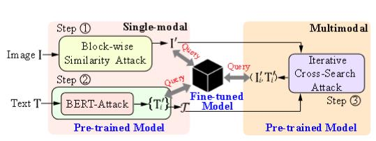
单模态：
图像攻击。作者提出了块级相似度攻击 (BSA) 来破坏通用的基于上下文的表示。
$$
\mathcal{L} = \underbrace{\sum _ {i=1}^{M _ {\alpha}} \sum _ {j=1}^{M_j^i} \text{Cos}(F _ {\alpha}^{i,j}(I), F _ {\alpha}^{i,j}(I’))} _ {\text{Image Encoder}} + \underbrace{\sum _ {k=1}^{M _ {\beta}} \sum _ {t=1}^{M_t^k} \text{Cos}(F _ {\beta}^{k,t}(I, T), F _ {\beta}^{k,t}(I’, T))} _ {\text{Transformer Encoder}}
$$
其中 $M _ {\alpha}$ 是图像编码器中的块数，$M_j^i$ 是在 $i\text{-th}$ 块中生成的展平图像特征嵌入的数量。类似地，$M _ {\beta}$ 是 Transformer 编码器中的块数，$M_t^k$ 是在 $k\text{-th}$ 块中生成的图像词元特征数。$F _ {\alpha}^{i,j}$ 是在图像编码器的 $i\text{-th}$ 层中获得的 $j\text{-th}$ 特征向量，$F _ {\beta}^{k,t}$ 是在 Transformer 编码器的 $k\text{-th}$ 层中获得的 $t\text{-th}$ 特征向量。图像编码器仅以单个图像 $I$ 或 $I’$ 作为输入，但 Transformer 编码器将同时使用图像和文本作为输入。采用余弦相似度来计算扰动特征与良性特征之间的距离。
使用PGD来进行迭代。
其实也还是前面的那一套。
文本攻击。直接应用 BERT-Attack 来生成文本扰动。
多模态：
从第一阶段生成的有效候选文本集 T 中，根据语义相似度得分 γi进行排序，选出最相似的 K个候选文本 {T’1, …, T’K}。
对于每一个顶级的候选文本 T’k： 协同优化。算法在已有的对抗性图像 I (来自第一阶段图像攻击的结果) 和当前的候选文本 T’k 的基础上，再次调用 BSA 函数。
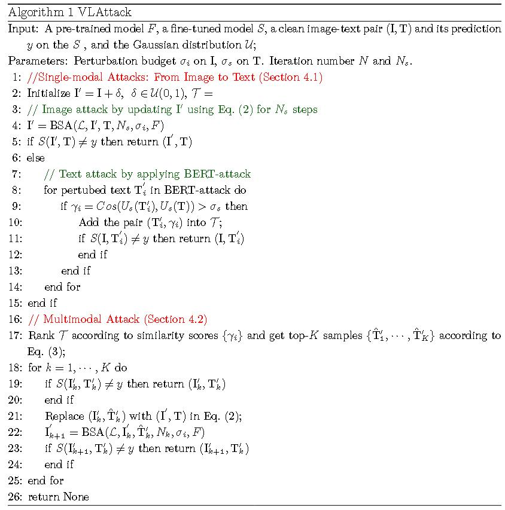
(arxiv 2024)As firm as their foundations: Can open-sourced foundation models be used to create adversarial examples for downstream tasks?
哈佛大学出品。提出了“补丁表示错位”（Patch Representation Misalignment，PRM）的跨任务攻击策略。
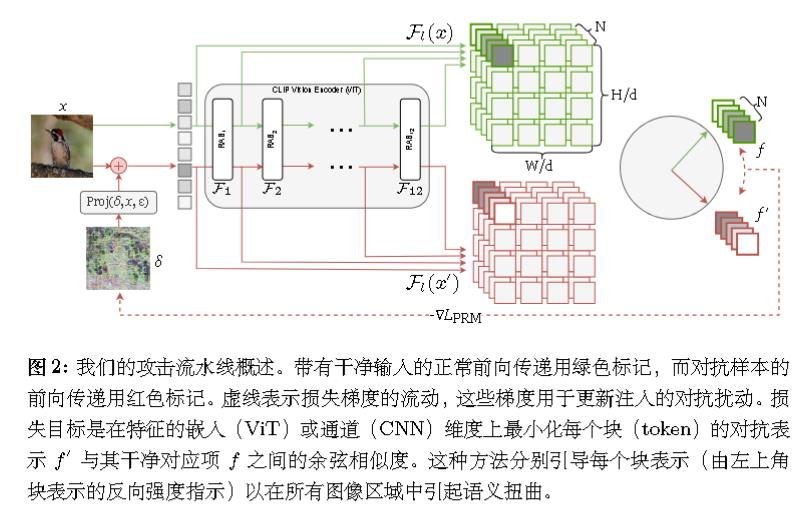
用 $F_l(x), F_l(x′) $来表示从第 l 层获得的中间编码器特征。
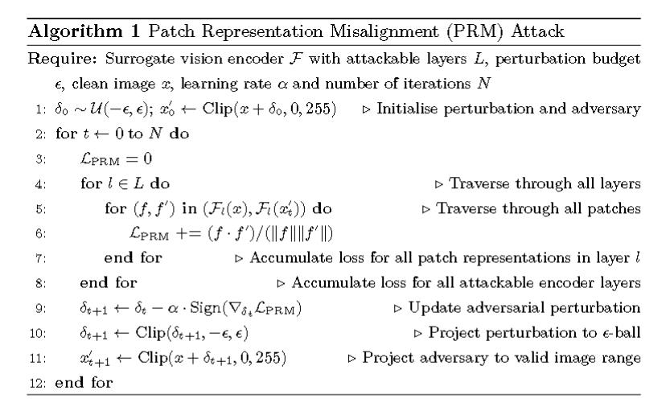
和前面的主要区别是对每层操作，而非对最后进行操作。
通用扰动
(拒ICLR 2025)One perturbation is enough: On generating universal adversarial pertur bations against vision-language pre-training models
算法
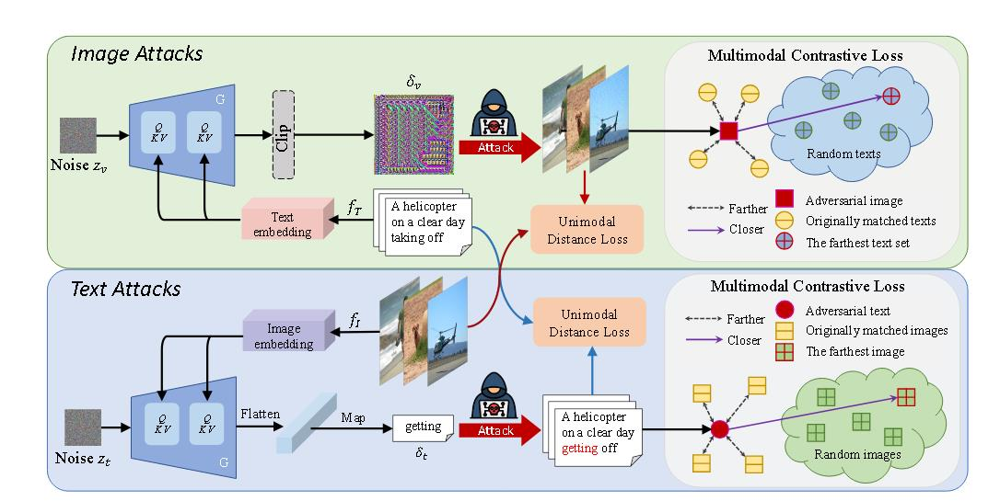
loss基本就是InfoNCE，范数损失那一套。还有用到了《Set-level guidance attack》中的集合思想。
创新点没看出来。除了使用Deepfool替换前人常用的PGD，然后还被审稿者怼了。
拒稿理由
https://openreview.net/forum?id=PdA9HAxO4w
批评地挺狠的。
AC：这项工作的主要弱点在于所提出的通用对抗性文本生成方法既低效又无效。生成的扰动质量存疑，因为仅替换词语并不能确保难以察觉，导致修改后的文本容易被识别。此外，原始文本与对抗性文本之间的高语义相似性表明攻击效果微乎其微，削弱了其有效性。使用大型语言模型来验证难以察觉性也缺乏说服力。
Deepfool
既然论文没啥价值，那就介绍一下Deepfool。
出自CVPR 2016，《DeepFool: a simple and accurate method to fool deep neural networks》
对抗的目标是：$\Delta(x;\hat{k}):= \min _ {r} |r|_2 : \mathrm{subject} : \mathrm{to} : \hat{k}(x+r) \not = \hat{k}(x)$
其中k是估计。
对于二分类
k可以写作$sign(f(x))=sign(w^Tx+b)$。
那么点到决策边界的距离为$r_\ast(x_0)=-\frac{f(x_0)}{||w||_2}w$。
而f的一阶近似是$f(x_0+r)\approx f(x_0)+\nabla^Tf(x_0)r$，而$w=\nabla f(x_0),b=f(x_0)$。
故
$$
\begin{align}
r_i&=-\frac{f(x_i)}{||\nabla f(x_0)||^2_2}\nabla f(x_i)
\\
x _ {i+1}&=x_i+r_i
\end{align}
$$
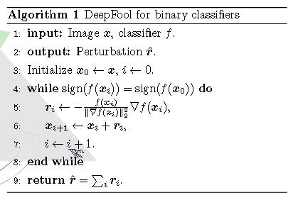
多分类也是相似的。
决策边界也还是直线，类似OVR。
$$
\hat{k}(x)=\text{argmax}_k f_k(x)
$$
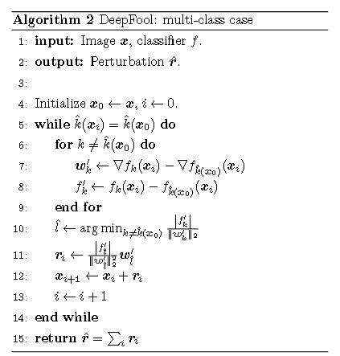
但值得注意的是，代码中所用的不是$x _ {i+1}=x_i+r_i$，而是$x _ {i+1}=x_i+(1+\eta)r_i$，其中$\eta$默认为0.02。
论文中并无提到这样做的理由。但我觉得只加一倍且过程中间使用了约等于，可能会导致并不越过决策边界，最好是再越高边界一点。
(SIGIR 2024)Universal adversarial perturbations for vision-language pre-trained models
Effective and Transferable Universal Adversarial Attack（ETU）
主要贡献：
- 这是首次在“黑箱”情景下学习通用对抗样本（UAPs），以检验视觉-语言预训练模型的鲁棒性。同时，该研究揭示了在多模态场景中发起
有效通用攻击所面临的关键挑战，为未来该领域的研究奠定了基石。 - 设计了一种新颖高效且可迁移的通用对抗扰动（UAP）生成方法，该方法通过综合考虑多模态交互，提升了 UAP 的实用性和迁移能力。提出了一种新颖的局部 UAP 强化技术和 ScMix数据增强方法，以增强对抗攻击的有效性和可迁移性。
目标：
$$
\arg\max _ {\delta} \mathcal{L}_1 = \sum _ {i=1}^{n} \left( \ell(f_x(x_i + \delta), f_x(x_i)) + \ell(f_x(x_i + \delta), f_t(t_i)) \right)
$$
使用ScMix进行数据增强：
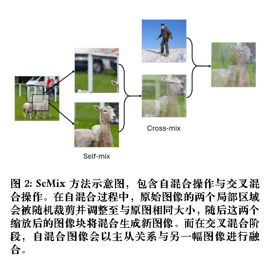
并进行裁剪数据增强：
记$\mathcal{A}$为随机裁剪子区域并将其调整至与原始图像相同的尺寸。
$$
\arg\max _ {\delta} \mathcal{L}_2 = \sum _ {i=1}^{n} \left( \ell(f_x(x_i + \mathcal{A}_s(\delta)), f_x(x_i)) + \ell(f_x(x_i + \mathcal{A}_s(\delta)), f_t(t_i)) \right)
$$
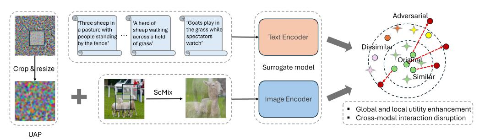
对抗防御
PromptTuning
(ICCV 2023 Workshop)Defense-prefix for preventing typographic attacks on clip
(ECCV 2024)Adversarial prompt tuning for vision-language models
(CVPR 2024)One prompt word is enough to boost adversarial robustness for pre-trained vision-language models
(ICIC 2024)Mixprompt: Enhancing generalizability and adversarial robustness for vision-language models via prompt fusion
pass
(MICCAI 2024)Promptsmooth: Certifying robustness of medical vision-language mod els via prompt learning
(NeurIPS 2024)Few-shot adversarial prompt learning on vision-language models
(ECCV 2024)Adversarial prompt distillation for vision-language models
(CVPR 2025)Tapt: Test time adversarial prompt tuning for robust inference in vision-language models
ContrastiveTuning
(ICLR 2023)Understanding zero-shot adversarial robustness for large-scale models
(CVPR 2024)Pre-trained model guided f ine-tuning for zero-shot adversarial robustness
(CoRR 2024)Revisiting the adversarial robustness of vision language models: a multimodal perspective
(ICML 2024 Oral/ PMLR 2024)Robust CLIP: Unsupervised adversarial fine-tuning of vision embeddings for robust large vision-language models
AdversarialTraining-Two-stageTraining
(CVPR 2024)Revisiting adversarial training at scale
(NeurIPS 2020 Spotlight)Large-scale adversarial training for vision-and-language representation learning
AdversarialDetection One-shotDetection
(拒ICLR 2025)Mirrorcheck: Efficient adversarial defense for vision-language models
拒稿理由
https://openreview.net/forum?id=p4jCBTDvdu
AdversarialDetection StatefulDetection
(MM2024)AdvQDet: Detecting query-based adversarial attacks with adversarial contrastive prompt tuning
后门&投毒攻击
Visual Trigger
(ICLR 2022 Oral)Poisoning and backdooring contrastive learning
(IEEE Symposium on Security and Privacy 2022)Badencoder: Backdoor attacks to pre trained encoders in self-supervised learning,
(CVPR 2024)Data poisoning based backdoor attacks to contrastive learning,
(CVPR 2024)Badclip: Dual-embedding guided backdoor attack on multimodal contrastive learning
Multi-modal Trigger
(CVPR 2024spotlight)Badclip: Trigger aware prompt learning for backdoor attacks on clip,
Multi-modal Poisoning
(ICML 2023/拒ICLR 2023)Data poisoning attacks against multimodal encoders
拒稿理由
https://openreview.net/forum?id=7qSpaOSbRVO
后门&投毒防御
Backdoor Removal Fine-tuning
(ICCV 2023)Cleanclip: Mitigating data poisoning attacks in multimodal contrastive learning
(拒ICLR 2024)Better safe than sorry: Pre training CLIP against targeted data poisoning and backdoor attacks
拒稿理由
https://openreview.net/forum?id=Ge0GEOvifh
Robust Training Pre-training
(NeurIPS 2023)Robust contrastive language-image pretraining against data poisoning and backdoor attacks,
Backdoor Detection Backdoor Model Detection
(CVPR 2023)Detecting backdoors in pre-trained encoders
Backdoor Detection Trigger Inversion
(ICCV 2023)Tijo: Trigger inversion with joint optimization for defending multimodal backdoored models
(USENIX Security 2024)Mudjacking: Patching backdoor vulnerabilities in foundation models
Backdoor Detection Backdoor Sample Detection
(AAAI 2024)Seer: Backdoor detection for vision-language models through searching target text and image trigger jointly
(ICLR 2025)Detecting backdoor samples in contrastive language image pretraining
参考资料
- Safety at Scale: A Comprehensive Survey of Large Model Safety
- https://kexue.fm
- https://www.cnblogs.com/MTandHJ